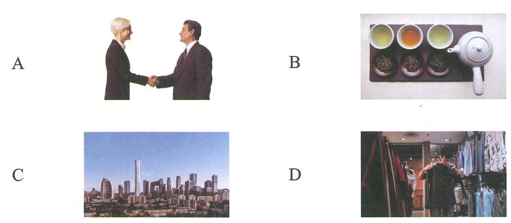
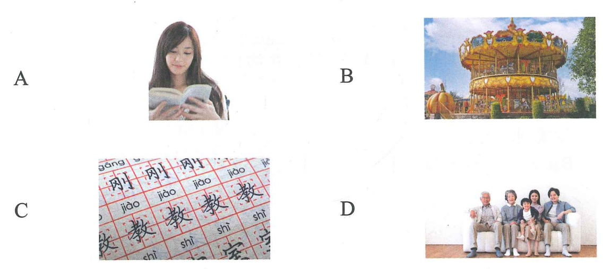

2. Wǒ ài chī shuǐguǒ
Bài 15 · 第十五课
大兴机场见！
Hẹn gặp ở sân bay Đại Hưng!
一、语音 · Ngữ âm
1. 听音节，匹配词语 · Nghe âm tiết và nối với từ ngữ phù hợp
Nghe ghi âm, chọn từ tương ứng với âm tiết nghe được, sau đó đọc to.
🔊 Nghe âm tiết và ghép từ
Âm tiết
1 nǐ hǎo
2 méi kànjiàn
3 nǎxiē rén
4 shuōhuà
5 shénme shíhou
6 zuò fēijī
Từ ngữ
你好 (ví dụ)1
说话
坐飞机
没看见
哪些人
什么时候
2. 听辨句调 · Nghe và phân biệt ngữ điệu của câu
A = 陈述句 · câu trần thuật B = 疑问句 · câu nghi vấn C = 感叹句 · câu cảm thán D = 祈使句 · câu cầu khiến
Nghe ghi âm, phân biệt loại câu nghe được và đọc to.
🔊 Phân biệt ngữ điệu câu
Ví dụ: Nǐ shì xuéshēng ma → B
3. Zhè jiàn yīfu zhēn piàoliang
4. Nǐmen qù nǎlǐ
5. Qǐng zuò
6. Yǔ dà ma
二、汉字 · Chữ Hán
1. 学练合体字及其偏旁 · Học và luyện tập chữ hợp thể cùng thiên bàng
口字旁
口 喝
单人旁
亻 你
言字旁
讠 认
日字旁
日 明
木字旁
木 杯
女字旁
女 姐
2. 抄写字词 · Chép lại chữ và từ vựng
喝茶
hē chá
你们
nǐmen
认识
rènshi
明天
míngtiān
杯子
bēizi
姐姐
jiějie
三、听力 · Phần nghe
🔊 Bài nghe mô phỏng hoàn chỉnh
第一部分 · Câu 1–3
听短语，选择正确图片。每题听两次。
Ví dụ: 三个苹果 → C


1.
2.
3.
第二部分 · Câu 4–5
听问题，选择正确回答。每题听两次。
Ví dụ: Jīntiān tiānqì zěnmeyàng?今天天气怎么样？
A. fēicháng rè非常热 ✓B. hěn hǎotīng很好听C. zài hē shuǐ在喝水
4.
5.
第三部分 · Câu 6–8
听对话，选择最匹配的图片。每题听两次。

女
Nǐ hǎo!你好！
男
Nǐ hǎo! Hěn gāoxìng rènshi nǐ.你好！很高兴认识你。
6.
7.
8.
第四部分 · Câu 9–10
听句子和问题，选择正确答案。每题听两次。
Xiàwǔ wǒ qù chāoshì, wǒ xiǎng mǎi yìxiē shuǐguǒ.下午我去超市，我想买一些水果。
★ Shuōhuàrén xiàwǔ qù nǎlǐ?说话人下午去哪里？
A. chāoshì超市 ✓B. yīyuàn医院C. xuéxiào学校
9.
10.
四、阅读 · Phần đọc
第一部分 · Câu 11–13
选择与句子最匹配的图片。

Wǒ hěn xǐhuan zhè běn shū.我很喜欢这本书。 → A
11. Wǒ jiā yǒu wǔ kǒu rén, wǒmen xiànzài zhù zài Běijīng.我家有五口人，我们现在住在北京。
12. Zhèlǐ yǒu hǎochī de, hái yǒu hǎowánr de.这里有好吃的，还有好玩儿的。
13. Xiànzài wǒ huì shuō yìdiǎnr Hànyǔ, yě huì xiě yìxiē Hànzì le.现在我会说一点儿汉语，也会写一些汉字了。
第二部分 · Câu 14–16
匹配句子。
A. Wǒ nǚ’ér.我女儿。B. Shí ge.十个。C. Píngguǒ.苹果。D. Hǎo de, xièxie!好的，谢谢！
Nǐ hē shuǐ ma?你喝水吗？ → D
14. Nǐ huì xiě jǐ ge Hànzì?你会写几个汉字？
15. Shéi shàng zhōngxué le?谁上中学了？
16. Nǐ ài chī shénme?你爱吃什么？
第三部分 · Câu 17–18
选词填空。
A. diànshì电视B. Běijīng北京C. míngzi名字
Nǐ jiào shénme (C)?你叫什么（C）？
17. Jīnnián wǒmen dōu xiǎng qù ( ).今年我们都想去（ ）。
18.
男
Wǒ ài kàn diànyǐng, yě ài chàng gē. Nǐ ne?我爱看电影，也爱唱歌。你呢？
女
Wǒ xǐhuan kàn ( ).我喜欢看（ ）。
第四部分 · Câu 19–20
选择正确答案。
Qǐngwèn xiànzài jǐ diǎn le?请问现在几点了？
★ Shuōhuàrén xiǎng zhīdao shénme?说话人想知道什么？
A. shíjiān时间 ✓B. míngzi名字C. fángjiānhào房间号
19.
Míngtiān Xīngqītiān, érzi xiǎng qù kàn yí ge diànyǐng.明天星期天，儿子想去看一个电影。
★ Érzi míngtiān xiǎng:儿子明天想：
20.
Xià xiǎoyǔ le, xiǎo gǒu fēicháng gāoxìng, tā xǐhuan xiǎoyǔ.下小雨了，小狗非常高兴，它喜欢小雨。
★ Xiǎo gǒu xǐhuan:小狗喜欢：